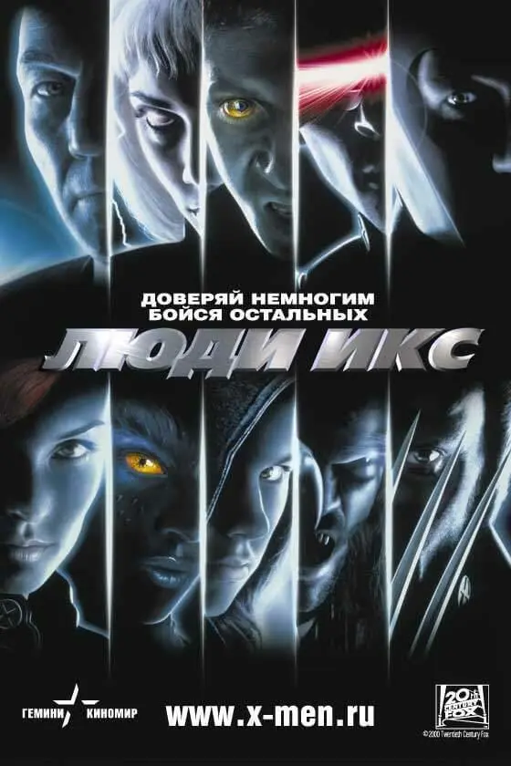
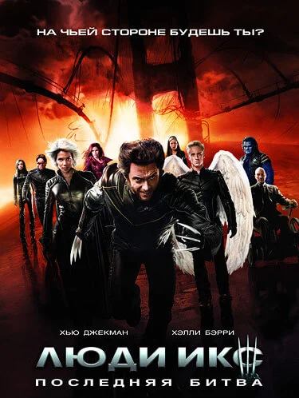

«Люди Икс» (2000)
В 1994 году 20th Century Fox и продюсер Лорен Шулер Доннер купили права на экранизацию «Люди Икс»[1]. Эндрю Кевин Уокер был нанят, чтобы написать сценарий[2], а режиссёр Джеймс Кэмерон выразил заинтересованность в управлении съёмками. Брайан Сингер подписал контракт режиссёра в июле 1996 года. Хоть он и не поклонник комиксов, он был очарован аналогией предрассудков и дискриминаций, предлагаемых им[1]. Джон Логан, Джосс Уидон[3], Эд Соломон, Кристофер Маккуорри и Дэвид Хейтер написали сценарий, но в титрах был указан только Хейтер[1]. Съёмки фильма проходили с 22 сентября 1999 по 3 марта 2000 года в Торонто[4].
«Люди Икс 2» (2003)
20th Century Fox наняла Дэвида Хейтера и Зака Пенна, чтобы написать свои собственные сценарии для фильма, которые Брайан Сингер должен был выбирать с целью выхода фильма на экраны в декабре 2002 года[5]. Некоторые части фильма были основаны на комиксе «X-Men: God Loves, Man Kills[en]», хотя персонаж Уильям Страйкер[en] был изменён с преподобного на полковника[6]. Майкл Догерти и Дэн Харрис были наняты в феврале 2002 года, чтобы переписать сценарий[7]. Съёмки начались 17 июня 2002 года в Ванкувере и закончились в ноябре, выход фильма состоялся 1 мая 2003 года[5]. В фильме появляется новый противник Людей Икс полковник Уильям Страйкер (Брайан Кокс), который пытается завладеть машиной профессора Ксавьера (Патрик Стюарт) «Церебро[en]». Для того чтобы победить Страйкера, Люди Икс объединяются с Братством мутантов Магнито (Иэн Маккеллен).
«Люди Икс: Последняя битва» (2006)
Брайан Сингер хотел снимать третий фильм параллельно с четвёртым[8]. 16 июля 2004 года он ушёл из проекта для работы над фильмом «Возвращение Супермена»[9], успев завершить историю про Феникса[10] и внедрить в фильм Эмму Фрост, роль которой была предназначена для Сигурни Уивер[11]. Кроме того Сингер хотел продемонстрировать характеры Роуг, Айсберга и Пиро[12]. Саймон Кинберг и Зак Пенн были наняты в следующем месяце, а серия «Одарённые» Джосса Уидона из комикса «Astonishing X-Men» была предложена как основная история. Мэттью Вон поднялся на борт в качестве режиссёра в феврале 2005 года[13], но оставил проект из-за напряжённого графика[14]. Бретт Ратнер занял это место в июне,[15] а съёмки фильма начались 2 августа 2005 года[16].
